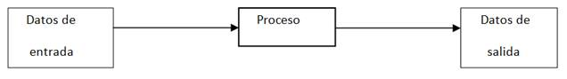
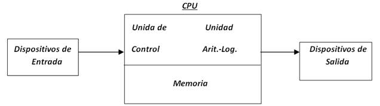

ALGORITMOS
El desarrollo de algoritmos es un tema fundamental en el diseño de programas por lo cual el alumno debe tener buenas bases que le sirvan para poder desarrollarlos de manera fácil y rápida.
La computadora no solamente es una máquina que puede realizar procesos para darnos resultados, sin que tengamos la noción exacta de las operaciones que realiza para llegar a esos resultados. Con la computadora además de lo anterior también podemos diseñar soluciones a la medida, de problemas específicos que se nos presenten. Más aún, si estos involucran operaciones matemáticas complejas y/o repetitivas, o requieren del manejo de un volumen muy grande de datos.
El diseño de soluciones a la medida de nuestros problemas, requiere como en otras disciplinas una metodología que nos enseñe de manera gradual, la forma de llegar a estas soluciones.
La solución de problemas mediante el uso de microcontroladores y/o computador nos lleva a desarrollar programas que guíen la ejecución de instrucciones o pasos que permitan al dispositivo llevar a cabo los cálculos y las acciones requeridas. La construcción de estos programas debe ser realizada mediante una metodología, los pasos para la construcción de programas son:
1. Diseñar el algoritmo, consiste en analizar el problema y describir los instrucciones de forma ordenada que resuelven el problema.
2. Codificar de forma sistemática la secuencia de instrucciones en un lenguaje.
3. Ejecutar y validar el programa en un simulador (verificación).
4. Implementar el circuito electrónico con las entradas y salidas del sistema desarrollado.
A las soluciones creadas por computadora se les conoce como programas y no son más que una serie de operaciones que realiza la computadora para llegar a un resultado, con un grupo de datos específicos. Lo anterior nos lleva al razonamiento de que un programa nos sirve para solucionar un problema específico.
Para poder realizar programas, además de conocer la metodología mencionada, también debemos de conocer, de manera específica las funciones que puede realizar la computadora y las formas en que se pueden manejar los elementos que hay en la misma.
Computadora: Es un dispositivo electrónico utilizado para procesar información y obtener resultados. Los datos y la información se pueden introducir en la computadora como entrada (input) y a continuación se procesan para producir una salida (output).
Proceso de información en la computadora

Programa: Es el conjunto de instrucciones escritas de algún lenguaje de programación y que ejecutadas secuencialmente resuelven un problema específico.
Organización física de una computadora

Dispositivos de Entrada: Como su nombre lo indica, sirven para introducir datos (información) en la computadora para su proceso. Los datos se leen de los dispositivos de entrada y se almacenan en la memoria central o interna. Ejemplos: teclado , scanners (digitalizadores de rastreo), mouse (ratón), trackball (bola de ratón estacionario), joystick (palancas de juego), lápiz óptico.
Dispositivos de Salida: Regresan los datos procesados que sirven de información al usuario. Ejemplo: monitor, impresora.
La Unidad Central de Procesamiento (C.P.U) se divide en dos:
Ø Unidad de control
Ø Unidad Aritmético - Lógica
Unidad de Control: Coordina las actividades de la computadora y determina que operaciones se deben realizar y en qué orden; así mismo controla todo el proceso de la computadora.
Unidad Aritmético - Lógica: Realiza operaciones aritméticas y lógicas, tales como suma, resta, multiplicación, división y comparaciones.
La Memoria de la computadora se divide en dos:
Ø Memoria Central o Interna
Memoria Auxiliar o Externa
Memoria Central (interna): La CPU utiliza la memoria de la computadora para guardar información mientras trabaja con ella; mientras esta información permanezca en memoria, la computadora puede tener acceso a ella en forma directa. Esta memoria construida internamente se llama memoria de acceso aleatorio (RAM).
La memoria interna consta de dos áreas de memoria:
La memoria RAM (Randon Access Memory): Recibe el nombre de memoria principal o memoria del usuario, en ella se almacena información solo mientras la computadora está encendida. Cuando se apaga o arranca nuevamente la computadora, la información se pierde, por lo que se dice que la memoria RAM es una memoria volátil.
La memoria ROM (Read Only Memory): Es una memoria estática que no puede cambiar, la computadora puede leer los datos almacenados en la memoria ROM, pero no se pueden introducir datos en ella, o cambiar los datos que ahí se encuentran; por lo que se dice que esta memoria es de solo lectura. Los datos de la memoria ROM están grabados en forma permanente y son introducidos por el fabricante de la computadora.
Memoria Auxiliar (Externa): Es donde se almacenan todos los programas o datos que el usuario desee.
Definición de Lenguaje
Lenguaje: Es una serie de símbolos que sirven para transmitir uno o más mensajes (ideas) entre dos entidades diferentes. A la transmisión de mensajes se le conoce comúnmente como comunicación.
La comunicación es un proceso complejo que requiere una serie de reglas simples, pero indispensables para poderse llevar a cabo. Las dos principales son las siguientes:
* Los mensajes deben correr en un sentido a la vez.
* Debe forzosamente existir 4 elementos: Emisor, Receptor, Medio de Comunicación y Mensaje.
Lenguajes de Programación
Es un conjunto de símbolos, caracteres y reglas (programas) que le permiten a las personas comunicarse con la computadora.
Los lenguajes de programación tienen un conjunto de instrucciones que nos permiten realizar operaciones de entrada/salida, calculo, manipulación de textos, lógica/comparación y almacenamiento/recuperación.
Los lenguajes de programación se clasifican en:
Ø Lenguaje Maquina: Son aquellos cuyas instrucciones son directamente entendibles por la computadora y no necesitan traducción posterior para que la CPU pueda comprender y ejecutar el programa. Las instrucciones en lenguaje maquina se expresan en términos de la unidad de memoria más pequeña el bit (dígito binario 0 o 1).
Ø Lenguaje de Bajo Nivel (Ensamblador): En este lenguaje las instrucciones se escriben en códigos alfabéticos conocidos como mnemotécnicos para las operaciones y direcciones simbólicas.
Ø Lenguaje de Alto Nivel: Los lenguajes de programación de alto nivel (BASIC, pascal, cobol, frotran, etc.) son aquellos en los que las instrucciones o sentencias a la computadora son escritas con palabras similares a los lenguajes humanos (en general en inglés), lo que facilita la escritura y comprensión del programa.
Definición de Algoritmo
La palabra algoritmo se deriva de la traducción al latín de la palabra árabe alkhowarizmi, nombre de un matemático y astrónomo árabe que escribió un tratado sobre manipulación de números y ecuaciones en el siglo IX.
Un algoritmo es una serie de pasos organizados que describe el proceso que se debe seguir, para dar solución a un problema específico.
Tipos de Algoritmos
Ø Cualitativos: Son aquellos en los que se describen los pasos utilizando palabras.
Ø Cuantitativos: Son aquellos en los que se utilizan cálculos numéricos para definir los pasos del proceso.
Lenguajes Algorítmicos
Es una serie de símbolos y reglas que se utilizan para describir de manera explícita un proceso.
Tipos de Lenguajes Algorítmicos
Ø Gráficos: Es la representación gráfica de las operaciones que realiza un algoritmo (diagrama de flujo).
Ø No Gráficos: Representa en forma descriptiva las operaciones que debe realizar un algoritmo (pseudocodigo).
Metodología para la solución de problemas por medio de computadora
Definición del Problema
Esta fase está dada por el enunciado del problema, el cual requiere una definición clara y precisa. Es importante que se conozca lo que se desea que realice la computadora; mientras esto no se conozca del todo no tiene mucho caso continuar con la siguiente etapa.
Análisis del Problema
Una vez que se ha comprendido lo que se desea de la computadora, es necesario definir:
Los datos de entrada.
Cuál es la información que se desea producir (salida)
Los métodos y fórmulas que se necesitan para procesar los datos.
Una recomendación muy práctica es el que nos pongamos en el lugar de la computadora y analicemos que es lo que necesitamos que nos ordenen y en que secuencia para producir los resultados esperados.
Diseño del Algoritmo
Las características de un buen algoritmo son:
Debe tener un punto particular de inicio.
Debe ser definido, no debe permitir dobles interpretaciones.
Debe ser general, es decir, soportar la mayoría de las variantes que se puedan presentar en la definición del problema.
Debe ser finito en tamaño y tiempo de ejecución.
Codificación
La codificación es la operación de escribir la solución del problema (de acuerdo a la lógica del diagrama de flujo o pseudocódigo), en una serie de instrucciones detalladas, en un código reconocible por la computadora, la serie de instrucciones detalladas se le conoce como código fuente, el cual se escribe en un lenguaje de programación o lenguaje de alto nivel.
Prueba y Depuración
Los errores humanos dentro de la programación de computadoras son muchos y aumentan considerablemente con la complejidad del problema. El proceso de identificar y eliminar errores, para dar paso a una solución sin errores se le llama depuración.
La depuración o prueba resulta una tarea tan creativa como el mismo desarrollo de la solución, por ello se debe considerar con el mismo interés y entusiasmo.
Resulta conveniente observar los siguientes principios al realizar una depuración, ya que de este trabajo depende el éxito de nuestra solución.
Documentación
Es la guía o comunicación escrita es sus variadas formas, ya sea en enunciados, procedimientos, dibujos o diagramas.
A menudo un programa escrito por una persona, es usado por otra. Por ello la documentación sirve para ayudar a comprender o usar un programa o para facilitar futuras modificaciones (mantenimiento).
La documentación se divide en tres partes:
Documentación Interna
Documentación Externa
Manual del Usuario
* Documentación Interna: Son los comentarios o mensaje que se añaden al código fuente para hacer más claro el entendimiento de un proceso.
* Documentación Externa: Se define en un documento escrito los siguientes puntos:
Descripción del Problema
Nombre del Autor
Algoritmo (diagrama de flujo o pseudocódigo)
Diccionario de Datos
Código Fuente (programa)
* Manual del Usuario: Describe paso a paso la manera cómo funciona el programa, con el fin de que el usuario obtenga el resultado deseado.
Mantenimiento
Se lleva a cabo después de terminado el programa, cuando se detecta que es necesario hacer algún cambio, ajuste o complementación al programa para que siga trabajando de manera correcta. Para poder realizar este trabajo se requiere que el programa este correctamente documentado.